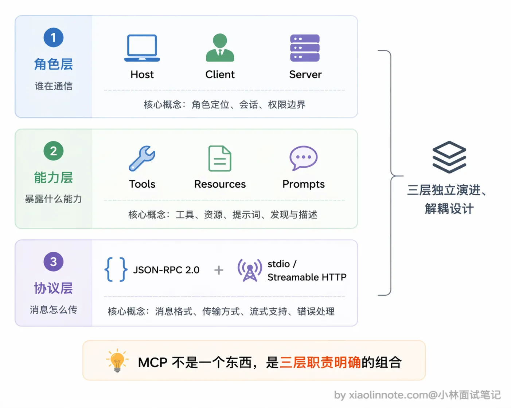
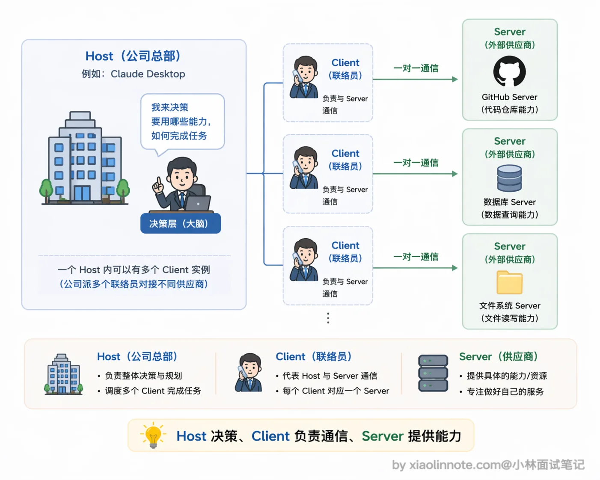
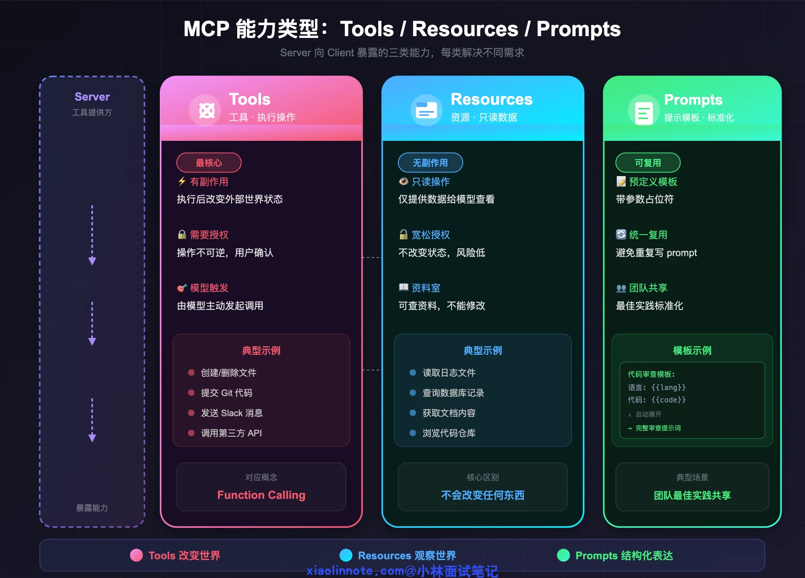
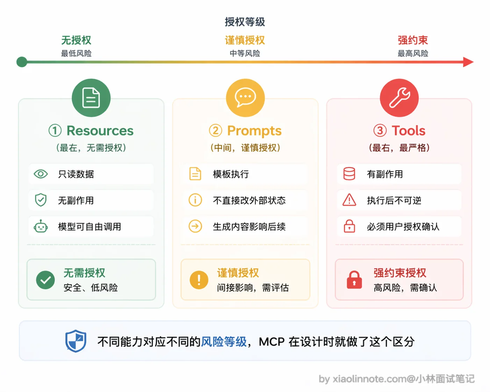
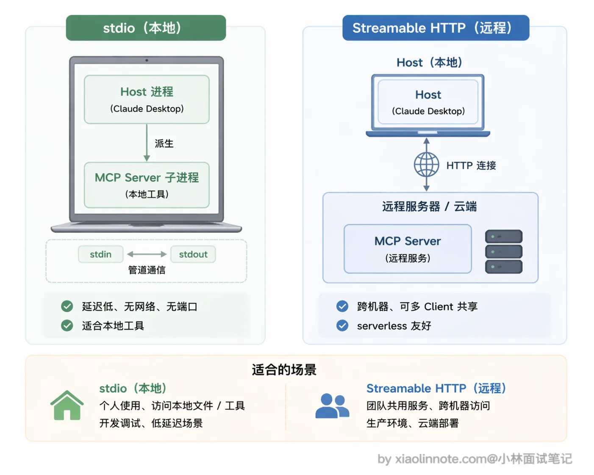
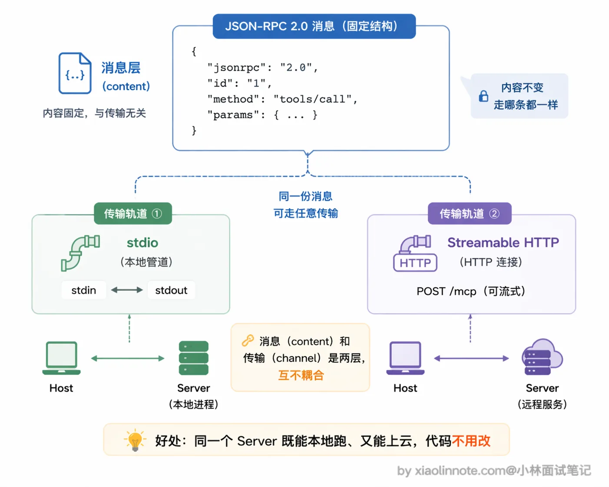

MCP 由哪几部分组成？
👔面试官：说说 MCP 由哪几部分组成？
🙋♂️我：MCP 就是一个协议嘛，主要就是 Client 和 Server 两部分，Client 发请求，Server 返回结果，跟普通的 HTTP 接口差不多。
👔面试官：就 Client 和 Server？那 Host 是什么角色？而且你说「跟 HTTP 接口差不多」，MCP 的能力类型你了解吗？Server 能暴露哪些东西？
🙋♂️我：Host 应该就是 Client 的别名吧？Server 暴露的就是工具，比如调 API、读文件这些，都算工具。
👔面试官：Host 和 Client 是两个不同的角色，Host 是宿主应用，Client 是 Host 里负责通信的模块，一个 Host 可以连多个 Server。而且 Server 暴露的不只是 Tools，还有 Resources 和 Prompts，三者职责完全不同，你把只读数据和有副作用的操作混为一谈了。另外底层的传输协议你也没提，消息格式和传输方式这一层也是 MCP 的核心组成部分。
好吧，MCP 的组成确实不是「Client + Server」这么简单，下面我从三个层次把它拆清楚，看完你就知道每一层各自负责什么了。
💡 简要回答
MCP 由三层组成，可以从角色、能力、协议三个维度来理解。
角色层有三个：Host 是 AI 应用本身（比如 Claude Desktop），Client 是 Host 里负责和 Server 通信的模块，Server 是工具提供方实现的独立进程，一个 Host 可以同时连多个 Server。
能力层定义了 Server 能暴露三类东西：Tools 是有副作用的操作（比如创建文件、调 API），Resources 是只读数据（比如读取文档内容），Prompts 是预定义的提示词模板。
协议层是底层通信：消息格式使用 JSON-RPC 2.0，当前规范定义 stdio（本地子进程通信）和 Streamable HTTP（HTTP POST/GET，可选 SSE 流）两种标准传输。旧版 HTTP+SSE 仍可能存在，兼容时要锁定协议版本。
这三层合在一起，就是 MCP 的完整组成。
📝 详细解析
先建立整体感：三层来看就清楚了
很多人第一次接触 MCP 会被各种概念搞乱，什么 Host、Client、Server、Tools、Resources、Prompts、JSON-RPC、stdio、SSE……一堆名词扔过来，确实容易懵。其实你只要把它拆成三层来看就清楚了：第一层是角色架构，搞清楚谁和谁在通信；第二层是能力类型，搞清楚 Server 能暴露什么东西给模型用；第三层是传输协议，搞清楚消息是怎么传的。
这三层各自独立、互不耦合，合在一起就是 MCP 的完整骨架。下面我一层一层拆开来讲。

第一层：角色架构，Host / Client / Server
MCP 定义了三个角色，弄清楚每个角色负责什么是理解整个系统的关键。
先说 Host。Host 是整个系统的宿主，也就是你在用的 AI 应用本身，比如 Claude Desktop、Cursor、Windsurf。Host 负责启动和管理所有 MCP Client，控制连哪些 Server、什么时候断开连接，是整个 MCP 系统的调度中心。你可以把 Host 理解成一家公司，它决定要和哪些外部供应商（Server）合作，并派出自己的联络员（Client）去对接。
再说 Client。Client 是 Host 内部的连接模块，一个 Client 对应一个 Server 连接。它负责三件事：初始化和 Server 的连接、向 Server 查询「你有哪些工具/资源/模板」（能力发现）、把模型的调用请求转发给 Server 并把结果带回来。Client 是 Host 派出的「驻场联络员」，专门负责和某一个 Server 打交道，Host 本身不直接和 Server 说话。
最后是 Server。Server 是提供能力的一方，可以是本地子进程，也可以是远程服务；它对外暴露工具、资源和提示模板。标准化能减少 Host 的定制代码，但 Host 仍需处理版本、认证、权限、模型侧 schema 映射和结果展示，所以不是「任何客户端无条件直连」。
三者的关系用图来看是这样的：

一个 Host 可以同时管理多个 Client/Server 会话，但是否把所有能力都暴露给模型要由宿主按任务、租户和权限筛选；工具列表越大也会增加选择噪声与上下文成本。
第二层：能力类型，Tools / Resources / Prompts
理解了角色分工，接下来看 Server 到底能暴露什么给 Client。很多人以为 Server 就只提供「工具」，其实不止，MCP 定义了三类能力，每类解决不同的需求，设计上有明确的职责分工。

第一类是 Tools（工具），是可调用的操作，既可以只读，也可以有副作用。创建文件、提交代码、发送 Slack 消息属于高风险例子；由模型触发不等于自动获准，宿主应结合用户确认、权限、幂等键、审计和回滚设计。
第二类是 Resources（资源），是可读取的上下文数据；通常没有写副作用，但内容仍可能敏感、动态或包含不可信指令，不能因为「只读」就跳过访问控制、脱敏和来源标记。资源还可能支持订阅和变更通知，不能一概当作静态文件。
第三类是 Prompts（提示模板），这是预定义的提示词模板，带参数占位符。它解决的是「每次都要手写重复 prompt」的问题。比如把团队固定的代码审查标准封装成模板，接受「编程语言」和「代码内容」两个参数，调用时只需传参，自动展开成完整提示词，不用每次从头写。这个能力特别适合团队内部的最佳实践共享，把积累的优质 prompt 模板化，所有人统一复用，标准也更一致。
三者的本质区别可以这样记：Tools 改变世界，Resources 观察世界，Prompts 结构化表达。

第三层：传输协议，JSON-RPC 2.0 + 传输方式
Client 和 Server 之间的通信由两部分组成：消息格式和传输方式，这两层是解耦的。
消息格式统一用 JSON-RPC 2.0。每条消息是一个 JSON 对象，格式固定：Client 发请求时说清楚「调哪个方法、参数是什么、这次请求的 ID 是多少」，Server 返回响应时带上执行结果或错误信息，通过 ID 匹配请求和响应。用 JSON 格式的好处是易读、易调试、任何编程语言都能实现，不管 Server 是 Python 写的还是 TypeScript 写的，消息格式是一样的。
// Client 向 Server 查询工具列表
{"jsonrpc": "2.0", "id": 1, "method": "tools/list", "params": {}}
// Server 返回工具列表
{"jsonrpc": "2.0", "id": 1, "result": {"tools": [{"name": "read_file", ...}]}}
// Client 请求调用某个工具
{"jsonrpc": "2.0", "id": 2, "method": "tools/call", "params": {"name": "read_file", "arguments": {"path": "/tmp/log.txt"}}}
那消息格式定了，怎么传呢？MCP 支持两种传输方式，适合不同的部署场景。
第一种是 stdio（标准输入输出），Server 作为本地子进程运行，Host 通过操作系统的管道和它通信，Server 从 stdin 读请求、把结果写到 stdout。这种方式适合本地工具，通常不需要额外端口，但仍有子进程权限、依赖、环境变量、恶意 Server 和本地文件访问风险，不能把「无网络」等同于「安全」。
第二种是 Streamable HTTP，Server 作为 HTTP 服务独立部署，Client 通过 HTTP 连接和它通信。一次 POST 可以得到普通 JSON 或 SSE 流，GET 是否提供服务端推送由能力决定；远程部署还必须处理认证、Origin 校验、会话、重连、代理超时和多租户隔离。

这里有个演进要说清楚：较早版本的远程传输方案叫「HTTP + SSE」，是双端点结构；当前规范使用单一 MCP endpoint 的 Streamable HTTP，并保留兼容旧服务的路径。实现时要锁定协议版本，不要把某个版本的状态说成所有客户端的现状。
Streamable HTTP 不是「内部仍然就是 SSE」：Client 用 POST 发送 JSON-RPC 消息，Server 可以直接回 JSON，也可以返回 text/event-stream；断线不自动等于取消，服务端还可提供事件恢复。它减少端点数量，但不自动解决负载均衡、认证或代理缓冲问题。
角色、能力与传输的边界
| 层次 | 主要问题 | 典型对象 | 不应混淆 |
|---|---|---|---|
| 角色 | 谁负责调度和通信？ | Host / Client / Server | Host 不是 Client 的别名 |
| 能力 | Server 暴露什么？ | Tools / Resources / Prompts | Resources 只读不等于无需授权 |
| 消息 | 消息如何表达？ | JSON-RPC request/response/notification | JSON-RPC 不负责业务权限 |
| 传输 | 消息如何到达？ | stdio / Streamable HTTP | SSE 是 HTTP 的一种事件表示，不是全部 MCP |
正常会话可以抽象为下面的生命周期；列举、读取和调用可以重复多次，通知也可能异步到达：
flowchart TD
init[initialize 初始化] --> caps[协商并确认 capabilities]
caps --> op{选择会话操作}
op -->|list / read / call| request[发送请求]
request --> outcome{收到什么？}
outcome -->|result / error| again{继续会话？}
again -->|是| op
again -->|否| close[close 关闭会话]
caps -. 异步事件 .-> notification[notification 通知]
notification -. 返回会话 .-> op实现还应给请求设置超时，区分可重试错误与副作用错误，并记录调用者、工具名、参数摘要和结果状态。
这里有一个很重要的设计点：消息格式（JSON-RPC 2.0）和传输方式（stdio / Streamable HTTP）是解耦的，同一套 JSON-RPC 消息可以跑在任意传输层上，切换传输方式不影响上层的工具调用逻辑。这个设计让 MCP Server 既可以轻量地作为本地进程运行，也可以作为正式的微服务部署，实现方式灵活但协议层始终一致。

🎯 面试总结
回到开头踩的雷，最大的问题是把 MCP 简单理解成「Client + Server」的二元结构，忽略了 Host 这个角色。
面试回答这道题，第一个要点是三层结构要说清楚：角色层（Host / Client / Server）、能力层（Tools / Resources / Prompts）、协议层（JSON-RPC 2.0 + stdio / Streamable HTTP）。
特别是 Host 和 Client 的区别，Host 是宿主应用本身，Client 是 Host 内部负责和 Server 通信的模块，一个 Host 可以同时连多个 Server，这个一对多的关系是 MCP 的核心设计。
第二个容易踩的雷是把 Server 暴露的能力全归为「工具」。Tools、Resources、Prompts 三者职责分明，Tools 有副作用、改变外部状态，Resources 是只读数据、没有副作用，Prompts 是提示词模板。面试时说清楚三者的区别，尤其是 Tools 和 Resources 的本质差异（有无副作用），会让面试官觉得你真正理解了 MCP 的设计意图，而不是只停留在表面。
第三个要提到的是协议层的解耦设计：消息格式和传输方式是独立的，JSON-RPC 2.0 定义了消息长什么样，stdio 和 Streamable HTTP 定义了消息怎么传，两者互不耦合，这也是 MCP 灵活性的来源。